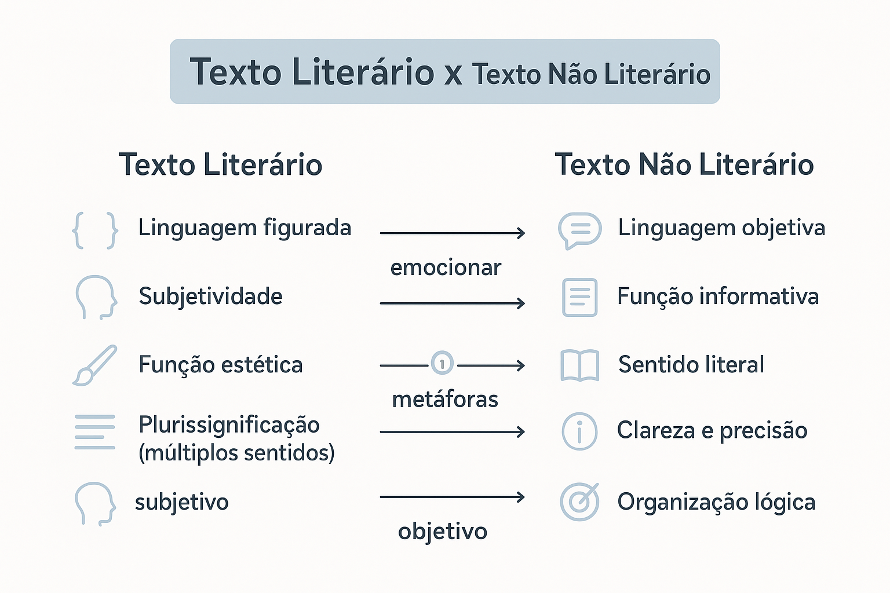

Texto literário e não literário: diferenças, características e exemplos
A diferença entre texto literário e não literário envolve a finalidade comunicativa, o trabalho com a linguagem e o contexto em que o texto é produzido e lido. Na literatura, a elaboração artística da expressão ocupa uma posição central. Nos textos não literários, predominam objetivos como informar, explicar, orientar ou defender uma posição.
Essa distinção exige cuidado: um poema pode empregar palavras simples e sentidos literais, enquanto uma propaganda pode explorar metáforas e ambiguidades. Por isso, é necessário observar o conjunto do texto, e não apenas uma característica isolada.

O que é texto literário?
O texto literário é uma produção verbal cuja organização participa de uma experiência artística. As escolhas de palavras, o ritmo, a construção das imagens, as vozes e a composição do texto contribuem para seus efeitos de sentido.
Sua leitura pode provocar emoções, questionamentos, estranhamento, prazer estético ou reflexão crítica. A literatura também pode representar conflitos sociais, preservar memórias e discutir diferentes maneiras de compreender a existência.
A dimensão estética não significa apenas beleza ou ornamentação. Um texto pode produzir efeitos artísticos por meio da simplicidade, da repetição, da fragmentação ou de uma linguagem deliberadamente incômoda.
Características frequentes do texto literário
- Elaboração da forma: o modo de dizer participa ativamente da construção dos sentidos.
- Construção de imagens: palavras e situações podem sugerir relações que ultrapassam a informação imediata.
- Pluralidade de sentidos: o texto pode sustentar diferentes interpretações fundamentadas em seus elementos.
- Exploração de vozes e perspectivas: narradores, personagens e sujeitos poéticos apresentam modos de perceber o mundo.
- Experimentação: convenções de linguagem e composição podem ser retomadas, transformadas ou questionadas.
Essas características são possibilidades de análise. Nem todo texto literário apresenta todas elas de maneira evidente.
Exemplo comentado de texto literário
A cadeira continuava perto da janela. Todas as tardes, a luz se sentava nela antes que a saudade chegasse.
Exemplo criado para esta explicação.
O trecho apresenta uma cadeira e uma cena cotidiana, mas organiza esses elementos para sugerir uma experiência de ausência. A luz e a saudade recebem ações humanas, como “sentar” e “chegar”, em um processo de personificação.
A cadeira pode sugerir a lembrança de alguém. Essa interpretação se apoia na relação entre o objeto, a repetição das tardes e a chegada da saudade; não é uma informação declarada diretamente.
Exemplos de gêneros literários
- Poemas;
- Contos;
- Romances;
- Novelas literárias;
- Crônicas literárias;
- Textos dramáticos, como tragédias e comédias;
- Fábulas e outras narrativas da tradição literária.
A classificação de uma obra também envolve sua circulação, sua recepção e as tradições culturais em que ela é reconhecida. A presença de versos ou de uma história inventada, sozinha, não resolve todos os casos.
O que é texto não literário?
O texto não literário é aquele em que predominam finalidades comunicativas como apresentar informações, explicar conceitos, estabelecer regras, orientar ações ou defender argumentos.
A organização desses textos depende do gênero e do público. Um manual precisa orientar procedimentos; um artigo de opinião procura sustentar uma posição; uma notícia apresenta um acontecimento considerado relevante para seus leitores.
Características frequentes do texto não literário
- Finalidade identificável: informar, explicar, instruir, solicitar, registrar ou persuadir.
- Organização ligada ao gênero: instruções podem apresentar etapas; argumentos podem ser acompanhados de justificativas e exemplos.
- Precisão conforme a necessidade: determinados gêneros exigem datas, medidas, definições ou termos técnicos.
- Relação com uma situação prática: o texto atende a necessidades da vida social, profissional, científica ou cotidiana.
- Recursos variados de linguagem: pode empregar explicações diretas, avaliações, humor e figuras de linguagem.
Atenção: texto não literário não é sinônimo de texto imparcial, verdadeiro ou sem criatividade. Uma publicidade pode ser inventiva; um artigo de opinião pode ser subjetivo; uma notícia pode conter uma informação que precise ser corrigida.
Exemplo comentado de texto não literário
A biblioteca municipal ficará fechada na segunda-feira para manutenção. O atendimento será retomado na terça-feira, às 8h.
Exemplo criado para esta explicação.
O aviso tem como finalidade orientar o público sobre o funcionamento da biblioteca. O motivo do fechamento e o horário de retorno são informações necessárias para que o leitor organize sua visita.
Nesse caso, a precisão temporal atende ao objetivo principal da comunicação.
Exemplos de gêneros não literários
- Notícias e reportagens;
- Artigos de opinião e editoriais;
- Artigos científicos e textos de divulgação científica;
- Manuais de instrução;
- Receitas culinárias;
- Regulamentos e editais;
- Relatórios;
- Avisos, requerimentos e correspondências;
- Anúncios publicitários.
Principais diferenças entre texto literário e não literário
| Critério | Texto literário | Texto não literário |
|---|---|---|
| Finalidade predominante | Construir uma experiência artística por meio da linguagem. | Informar, explicar, orientar, registrar ou persuadir, conforme o gênero. |
| Trabalho com a forma | A composição e o modo de dizer são centrais à experiência da obra. | A composição se organiza principalmente em função do objetivo comunicativo. |
| Construção dos sentidos | Pode explorar sugestões, ambiguidades e relações simbólicas. | Pode buscar precisão ou explorar sentidos figurados, conforme a finalidade. |
| Relação com a realidade | Pode representar, recriar ou questionar experiências reais e imaginadas. | Depende do gênero: pode relatar fatos, propor ideias, estabelecer normas ou criar situações persuasivas. |
| Exemplos | Conto, romance, poema e crônica literária. | Notícia, manual, relatório e artigo de opinião. |
Linguagem denotativa e conotativa
A distinção entre denotação e conotação ajuda a analisar os textos, mas não deve funcionar como um critério único de classificação.
Denotação
Ocorre quando a palavra é empregada em um sentido literal ou referencial adequado ao contexto.
Exemplo: “A temperatura da água chegou a 80 °C.”
A frase apresenta uma medida. Seu sentido depende da compreensão dos termos e da informação expressa.
Conotação
Ocorre quando o uso mobiliza sentidos figurados, associações ou valores expressivos construídos no contexto.
Exemplo: “A cidade acordou de coração apertado.”
A cidade é apresentada como se pudesse acordar e experimentar uma emoção. A expressão pode aparecer tanto em um texto literário quanto em uma reportagem.
Conclusão para a análise: textos literários podem conter passagens denotativas, e textos não literários podem apresentar linguagem conotativa.
Literatura, ficção e realidade
Literário e ficcional não são termos equivalentes. Uma obra literária pode trabalhar com memórias, acontecimentos históricos e experiências vividas. Por outro lado, uma propaganda pode inventar personagens e situações para vender um produto.
A presença de invenção não basta para definir um texto como literário. É necessário considerar como a linguagem foi organizada e quais relações o texto estabelece com seus leitores e com sua esfera de circulação.
Autor, narrador e eu lírico
Também é importante distinguir a pessoa que escreveu a obra das vozes construídas no texto.
- Autor: pessoa responsável pela criação da obra.
- Narrador: voz que conta os acontecimentos de uma narrativa.
- Eu lírico ou sujeito poético: voz que se manifesta no poema.
Uma narrativa em primeira pessoa não deve ser tratada automaticamente como relato fiel da vida do autor. Essa relação precisa ser examinada conforme a obra e seu contexto.
Um mesmo assunto pode aparecer nos dois tipos de texto?
Sim. O tema não determina, sozinho, se um texto é literário. Chuva, trabalho, infância e desigualdade podem ser abordados em diferentes gêneros.
Abordagem informativa
A chuva provocou alagamentos em três ruas do bairro nesta manhã. Equipes de manutenção foram enviadas ao local.
O trecho apresenta um acontecimento e uma providência tomada. Sua organização se aproxima de um registro noticioso.
Abordagem literária
A chuva entrou primeiro pela rua. Depois, sem pedir licença, atravessou os retratos e desfez o chão da infância.
O trecho organiza o acontecimento por meio de imagens. A expressão “chão da infância” associa o espaço material à memória, enquanto “sem pedir licença” atribui uma ação humana à chuva.
Os dois trechos foram criados para esta explicação.
Ambos tratam de uma situação semelhante. O que muda é a maneira de construir a experiência de leitura e a finalidade predominante.
Casos que exigem atenção
Crônica
A crônica pode explorar acontecimentos cotidianos com humor, reflexão, cenas narrativas e elaboração artística. Também pode se aproximar do comentário jornalístico. Por isso, convém analisar o texto concreto, em vez de classificá-lo apenas pelo nome.
Publicidade
Anúncios podem utilizar rimas, metáforas, personagens e jogos de palavras. Em geral, esses recursos se articulam a uma finalidade persuasiva, como promover uma marca ou estimular uma ação.
Assim, a presença de criatividade e linguagem figurada não transforma automaticamente o anúncio em literatura.
Reportagem
Uma reportagem pode apresentar cenas, descrições e recursos narrativos elaborados. É necessário observar sua relação com a apuração, a identificação das fontes e o compromisso de relatar acontecimentos.
Memórias e relatos autobiográficos
Textos baseados em experiências pessoais podem receber tratamento literário. O vínculo com a vida do autor não impede a elaboração artística da linguagem.
Como identificar em questões de interpretação
- Leia o texto inteiro: evite decidir a classificação com base em uma palavra isolada.
- Observe a finalidade predominante: o texto orienta, informa, argumenta ou constrói uma experiência artística?
- Examine a composição: analise imagens, ritmo, repetições, vozes e organização das informações.
- Considere o gênero e a circulação: observe onde o texto foi publicado e como se apresenta ao leitor.
- Justifique com elementos do texto: explique como os recursos identificados produzem determinados efeitos.
Erros comuns nessa análise
- Considerar toda linguagem figurada exclusivamente literária;
- Afirmar que todo texto não literário é imparcial;
- Confundir literatura com qualquer história inventada;
- Tratar todo texto em versos como necessariamente literário;
- Achar que a literatura não pode informar ou fazer crítica social;
- Entender “múltiplas interpretações” como autorização para atribuir qualquer sentido ao texto.
Uma interpretação precisa se apoiar em marcas textuais e nas relações entre elas. A abertura de sentidos da literatura não elimina a necessidade de justificar a leitura.
Exercícios com gabarito comentado
1. Finalidade comunicativa
Leia o trecho:
Antes de limpar o aparelho, desconecte-o da tomada e aguarde seu resfriamento.
A classificação mais adequada é:
- A) Literário, porque apresenta ações em sequência.
- B) Não literário, porque orienta um procedimento.
- C) Literário, porque utiliza verbos no imperativo.
- D) Não literário, porque não apresenta nenhum verbo.
2. Construção de imagens
Leia o trecho:
No quintal vazio, a tarde dobrava devagar as roupas da ausência.
O tratamento literário da linguagem se evidencia principalmente:
- A) Pela apresentação de uma instrução doméstica.
- B) Pelo registro de um horário exato.
- C) Pela imagem que associa a tarde a uma ação humana e à ausência.
- D) Pela comprovação documental de um acontecimento.
3. Linguagem figurada
Um anúncio de cursos apresenta a frase “Abra as portas do seu futuro”. O uso dessa metáfora permite concluir que:
- A) O anúncio é obrigatoriamente um poema.
- B) Textos publicitários não possuem finalidade prática.
- C) Toda expressão figurada é exclusiva da literatura.
- D) Um texto não literário pode usar recursos figurados para persuadir.
4. Relação com a realidade
Assinale a afirmação adequada:
- A) Obras literárias podem recriar acontecimentos históricos.
- B) Toda narrativa baseada em fatos reais é não literária.
- C) A invenção de personagens é suficiente para definir literatura.
- D) Um texto literário não pode discutir problemas sociais.
5. Interpretação
A afirmação de que um texto literário pode apresentar múltiplos sentidos significa que:
- A) Qualquer interpretação é válida, mesmo sem apoio textual.
- B) O texto não apresenta organização.
- C) Leituras diferentes podem ser sustentadas por seus elementos.
- D) O leitor deve ignorar o contexto e as palavras utilizadas.
Confira o gabarito comentado
- B. O trecho orienta uma ação e estabelece uma sequência necessária para o uso seguro do aparelho.
- C. A tarde recebe uma ação humana, e a expressão “roupas da ausência” constrói uma imagem associada à falta de alguém.
- D. A metáfora contribui para a persuasão publicitária. Sua presença não determina, sozinha, uma classificação literária.
- A. A literatura pode incorporar fatos históricos e experiências reais em sua construção artística.
- C. A pluralidade de sentidos admite interpretações diferentes, desde que fundamentadas no texto.
Perguntas frequentes
Qual é a principal diferença entre texto literário e não literário?
No texto literário, a elaboração artística da linguagem participa de modo central da experiência de leitura. No não literário, predominam objetivos como informar, explicar, orientar ou defender uma posição. A análise também deve considerar o gênero e o contexto de circulação.
Todo texto com metáfora é literário?
Não. Metáforas também aparecem em anúncios, notícias, artigos de opinião e conversas cotidianas. Uma figura de linguagem isolada não determina a classificação do texto.
Um texto literário pode tratar de fatos reais?
Sim. Um texto literário pode incorporar acontecimentos históricos, experiências pessoais e questões sociais. Sua classificação depende também do tratamento artístico da linguagem e de suas condições de produção e leitura.
Todo texto não literário é imparcial?
Não. Artigos de opinião, editoriais, resenhas e anúncios podem defender posições, expressar avaliações ou tentar persuadir o leitor.
Resumo sobre texto literário e não literário
- O texto literário apresenta uma elaboração artística da linguagem central à experiência da obra.
- O texto não literário atende predominantemente a finalidades como informar, explicar, orientar e argumentar.
- Metáforas, emoções e criatividade podem aparecer nos dois.
- Literatura e ficção não são conceitos equivalentes.
- Textos não literários podem apresentar opiniões e avaliações.
- A classificação depende da análise conjunta da linguagem, da finalidade, do gênero e da circulação.
Conteúdos relacionados
Aprofunde seus estudos sobre linguagem e interpretação:
Explore outros conteúdos
Continue seus estudos acessando outras seções do site Mestre Kira: